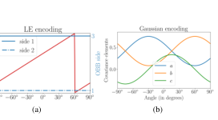
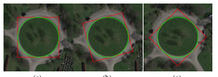
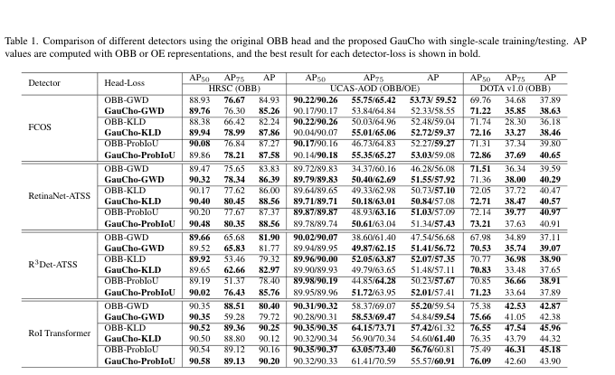
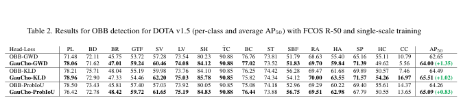
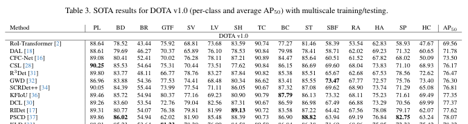
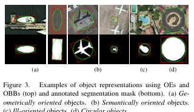
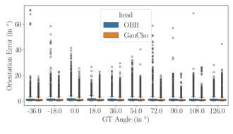

PAPERNOTE / FULL PAPER REVIEW
2025 · CVPRGauCho: Gaussian Distributions with Cholesky Decomposition for Oriented Object Detection
本頁依據收錄的 CVPR 2025 原始 PDF 整理。以下逐章重點、公式與數據均以論文內容為準；圖表為原論文圖表裁切，保留原圖標題與數值。
ABSTRACT / 論文摘要
摘要與研究概覽
本文提出 GauCho，一種用於方向物件偵測（Oriented Object Detection, OOD）的新型迴歸頭。與傳統方法直接迴歸方向邊界框（OBB）的寬、高與角度不同，GauCho 透過 Cholesky 分解參數化二維高斯分布，讓網路直接預測高斯分布的平均值與協方差結構。作者指出，此表示法具有連續且一對一的參數映射，可從理論上緩解角度邊界不連續問題，並可搭配 GWD、KLD、ProbIoU 等高斯式損失函數。
此外，論文提出以方向橢圓（Oriented Ellipses, OEs）作為方向物件的另一種輸出表示。實驗在 HRSC、UCAS-AOD、DOTA v1.0 與 DOTA v1.5 上比較 OBB head 與 GauCho head，結果顯示 GauCho 可整合多種偵測架構，整體 AP 表現具競爭力，並在方向誤差實驗中取得較低誤差。
PAPER INFORMATION / 論文資訊
PAPER INFORMATION
Marques, J. H. L., Murrugarra-Llerena, J., & Jung, C. R. (2025). GauCho: Gaussian Distributions with Cholesky Decomposition for Oriented Object Detection. Proceedings of the IEEE/CVF Conference on Computer Vision and Pattern Recognition (CVPR), 3593–3602.
DOI：10.1109/CVPR52734.2025.00340
作者程式碼：github.com/jhlmarques/GauCho
整理範圍：原論文 Abstract、Sections 1–6、Figures 1–4、Tables 1–3。論文未提供於本文中的額外實驗細節或 supplementary material 數據，未在此自行補造。
01 / INTRODUCTION
第一章：研究背景與問題定義
1.1 研究背景
方向物件偵測是電腦視覺中一般物件偵測的延伸，除了定位物件中心與尺寸，也要估計物件在影像中的方向。此任務特別適用於遙測與航照影像，因為船舶、車輛、飛機等物件可能以任意角度出現。一般水平邊界框（HBB）無法緊密貼合旋轉物件，因此常使用方向邊界框（OBB）表示。
1.2 傳統 OBB 的角度邊界不連續
OBB 通常以中心 (x, y)、寬高 (w, h) 與角度 θ 表示。常見 OpenCV 與 Long-Edge（LE）參數化方式，在角度範圍邊界附近可能出現不同參數卻代表幾何上相近框的情況。若使用逐參數比較的 L1 loss，可能讓幾何相似的框產生很大的迴歸誤差。
1.3 高斯表示法仍有的限制
- Decoding ambiguity：正方形或近正方形物件轉成等向性高斯分布後，角度資訊可能無法從協方差矩陣還原。
- Angular boundary discontinuity：既有高斯式方法若仍由 OBB 參數轉換高斯，角度接近 ±90° 時仍可能出現相似協方差對應不同角度的情況。


- OOD 需要同時定位物件與估計方向，OBB 是常見表示法。
- OBB 角度參數化可能造成邊界不連續，影響迴歸訓練。
- 高斯式 loss 有優勢，但 OBB-to-Gaussian 映射仍可能有角度不連續與正方形解碼歧義。
- 本文目標是直接迴歸連續的高斯參數，並提出 OE 作為替代輸出表示。
03 / THE PROPOSED REPRESENTATION
第三章：GauCho 方法與數學表示
3.1 OBB 與 Gaussian Distributions
論文將 OBB 中心定義為高斯平均向量，並將 OBB 的尺寸與方向轉成協方差矩陣：
其中 R 為旋轉矩陣，Λ 為特徵值對角矩陣。作者指出，直接迴歸協方差元素 (a, b, c) 會受到正定矩陣限制，造成參數間的約束。
3.2 Cholesky Decomposition
為避免直接最佳化協方差矩陣的正定限制，作者使用 Cholesky 分解：
其中 α、β 必須大於 0，γ 為實數。Cholesky 參數 (α, β, γ) 對應唯一的高斯分布，因此網路可以直接迴歸這些參數。此參數化構成 GauCho 的核心。
3.3 GauCho Regression Head
3.3.1 Matrix coefficient bounds
論文推導協方差矩陣元素的界限：λmin ≤ a, b ≤ λmax，且 |c| ≤ ½(λmax − λmin)。對 Cholesky 參數則得到 √λmin ≤ α, β ≤ √λmax，以及 |γ| ≤ √(λmax − λmin)（論文 Proposition 3.2）。這些界限將網路輸出與物件幾何尺寸連結。
3.3.2 Anchor-free head
以 FCOS 為基礎，中心位置由 feature-map 位置與 stride 預測：x = px + t dx、y = py + t dy。形狀參數使用乘法式偏移：α = t edα、β = t edβ、γ = t dγ。論文指出當 dα = dβ = dγ = 0 時，對應與 stride 成比例的軸對齊物件。
3.3.3 Anchor-based head
以水平 anchor (ax, ay, aw, ah) 為基礎，中心使用 anchor 尺寸縮放偏移；Cholesky 形狀參數則以 anchor 尺寸與縮放係數初始化，再預測乘法式偏移。對正方形 anchor，作者引入 δ 項，避免 γ 被固定為 0 而無法學習長寬比變化。
3.4 Decoding GauCho
論文提出兩種解碼方式：
- OBB decoding：由協方差矩陣求特徵值與特徵向量，取得長邊方向與尺寸；但等向性 Gaussian 的方向仍無法唯一還原。
- OE decoding：高斯 PDF 的等高線為橢圓區域，協方差矩陣與方向橢圓之間存在一對一映射。橢圓半軸依 λmax、λmin 與尺度參數 s 決定；等向性 Gaussian 對應圓形，不強制指定方向。
- GauCho 的網路輸出為中心 (x, y) 與 Cholesky 參數 (α, β, γ)。
- Cholesky 分解使協方差矩陣由結構上保證正定，避免直接迴歸受限矩陣元素。
- 方法同時支援 anchor-free 與 anchor-based detector。
- 輸出可解碼為 OBB 或 OE；OE 對圓形及方向不明確物件較自然。
04 / EXPERIMENTAL RESULTS
第四章：實驗設計與結果
4.1 實驗模型與設定
作者將 GauCho head 整合到 FCOS、RetinaNet、R3Det、RoI Transformer。除特別說明外，backbone 使用 ResNet-50；one-stage detector 使用 ATSS 定義正負樣本。比較損失函數為 GWD、KLD、ProbIoU，並沿用 MMRotate benchmark 的預設設定（例如 learning rate、epoch 與 augmentation），以便與 OBB baseline 公平比較。
4.2 資料集與訓練數據
| 資料集 | 任務／內容 | 影像數量 | 訓練／測試 | 訓練設定 |
|---|---|---|---|---|
| DOTA v1.0 / v1.5 | 航照影像方向物件；v1.5 更新標註並納入 tiny objects | 2,806 | 1,869 / 937 | 12 epochs；random flip 50% |
| HRSC 2016 | Google Earth 船舶影像 | 1,070 | 626 / 444 | 72 epochs；垂直、水平、對角翻轉各 25%；隨機旋轉 50% |
| UCAS-AOD | 遙測影像；cars、planes 兩類 | 1,510 | 1,110 / 400 | 沿用 HRSC 的 MMRotate 設定 |
硬體：HRSC 與 UCAS-AOD 使用 TITAN Xp 12GB；DOTA v1.0 與 v1.5 使用 A100 80GB。以上數據依論文第 4 節。
4.3 Table 1：不同 detector、loss 與資料集比較
單尺度訓練／測試下，HRSC 與 UCAS-AOD 的 OBB head、GauCho head 整體表現相近；DOTA v1.0 上 FCOS-GauCho 在三種 loss 的 AP50、AP75 與 AP 均高於對應 FCOS-OBB。UCAS-AOD 含有許多近正方形飛機框，AP75 對解碼歧義較敏感；使用 OE 計算可提升部分 AP75 表現與穩定性。

4.4 Table 2：DOTA v1.5 結果
作者只列 FCOS，原因是 DOTA v1.5 的小物件需要調整 RetinaNet、R3Det、RoI Transformer 的 anchor，而 MMRotate 未提供相應預設設定。GauCho 在三種 loss 下的 AP50 均優於 OBB head：
| Loss | OBB AP50 | GauCho AP50 | 差異 |
|---|---|---|---|
| GWD | 62.65 | 64.00 | +1.35 |
| KLD | 64.49 | 65.51 | +1.02 |
| ProbIoU | 64.26 | 65.09 | +0.83 |

4.5 Table 3：DOTA v1.0 多尺度 SOTA 比較
多尺度訓練／測試下，FCOS-GauCho 的 AP50 為 78.85；GauCho-RoI Transformer 為 80.61。論文指出 FCOS-GauCho 略高於同為 anchor-free 的 CenterNet-ACM（78.53），並與當時具競爭力的方法比較。

4.6 推論成本
論文報告 HRSC、NVIDIA 3090 GPU 上，FCOS-GauCho 平均推論時間為 18.33 ms，FCOS-OBB 為 18.00 ms。作者指出額外成本來自將 OBB 解碼，與 backbone 的計算成本相比幅度有限。
- 實驗涵蓋 4 種 detector、3 種 Gaussian loss、3 個主要資料集（DOTA v1.0/v1.5、HRSC、UCAS-AOD）。
- DOTA v1.5 的 FCOS-GauCho AP50 相對 OBB 提升 +0.83 至 +1.35。
- DOTA v1.0 多尺度結果：FCOS-GauCho 78.85 AP50；GauCho-RoI Transformer 80.61 AP50。
- HRSC 上 FCOS-GauCho 18.33 ms，FCOS-OBB 18.00 ms，推論額外負擔小。
05 / DISCUSSION
第五章：討論
5.1 OBB 與 OE 的適用情境
作者依 DOTA v1.0 類別討論物件是否具有幾何主軸。船舶（SH）、大型車輛（LV）、網球場（TC）等屬於幾何方向明確的物件；飛機（PL）、直升機（HC）等可能具有語意方向，但外框近似正方形；圓環（RA）或儲槽（ST）等則可能方向不明確。對後兩類，OBB 可能賦予不穩定或人為的方向，而 OE 能以近圓形表示。

以 DOTA 全資料集的 segmentation mask 比較 OBB 與 OE 的 IoU，作者指出 15 個類別中有 9 個類別的 median IoU 在 OE 表示下較高。論文將此結果視為 OE 可作為方向物件替代表示的支持證據。
5.2 Orientation Consistency 與角度誤差
作者使用 HRSC 船舶資料集評估方向一致性。對測試影像合成 1° 至 360°、每 1° 一個版本的旋轉影像，將 GT 方向分成 10 個角度區間，並比較使用 ProbIoU 訓練的 FCOS-OBB 與 FCOS-GauCho。

| 指標 | FCOS-OBB | FCOS-GauCho | 改善 |
|---|---|---|---|
| Average Orientation Error (AOE) | 1.36° | 1.11° | 降低 0.25° |
| Median Orientation Error (MOE) | 0.94° | 0.79° | 降低 0.15° |
作為比較，FCOS-PSC 的 mean 與 median orientation error 分別為 1.14° 與 0.83°；論文指出 GauCho 在兩項指標上略低。
5.3 研究限制與解讀
- GauCho 並未完全消除 square-like object 的 decoding ambiguity；作者以 OE 作為替代輸出來部分緩解。
- AP 提升依 detector、loss 與資料集而異，並非每個組合都大幅領先 OBB。
- 作者沿用 baseline 預設訓練參數，並指出若針對 GauCho 重新調整超參數，可能得到更佳結果，但不在本文研究範圍。
- 旋轉增強可改善 rotation equivariance，但對方向不明確類別強制學習角度可能產生矛盾；論文以 RA、ST 類別的旋轉標註策略說明此問題。
- OE 對方向明確物件可保留形狀方向，對圓形或方向不明確物件則避免產生人為角度。
- 15 個 DOTA 類別中，9 類的 OE median IoU 高於 OBB。
- HRSC 方向誤差：AOE 由 1.36° 降至 1.11°；MOE 由 0.94° 降至 0.79°。
- GauCho 仍有 square-like decoding ambiguity，OE 是緩解策略而非完全消除所有歧義。
06 / CONCLUSIONS
第六章：結論
本文提出基於高斯分布與 Cholesky 分解的 GauCho regression head，直接迴歸高斯分布參數，而不是直接迴歸協方差矩陣或傳統 OBB 形狀參數。作者推導 Cholesky 參數與 OBB 幾何尺寸的界限，並展示 anchor-free 與 anchor-based detector 的整合方式。
實驗顯示 GauCho 可與現有 detector 及 Gaussian-based loss 搭配，在多個資料集取得與 OBB head 相近或更好的 AP 表現，並在 HRSC 的方向誤差評估中降低 AOE、MOE。作者亦提出 OE 作為 GauCho 的輸出表示，尤其適合圓形或方向不明確物件。
閱讀後可延伸思考的問題
- 若將 GauCho head 應用到不同 backbone 或更新的 OOD detector，效能與推論成本是否仍維持相同趨勢？
- 對 square-like objects，如何設計評估指標，避免只用角度誤差衡量本身沒有明確方向的物件？
- 在 DOTA 類別不均衡與 tiny objects 情境下，如何進一步調整 anchor、augmentation 與 loss 權重？